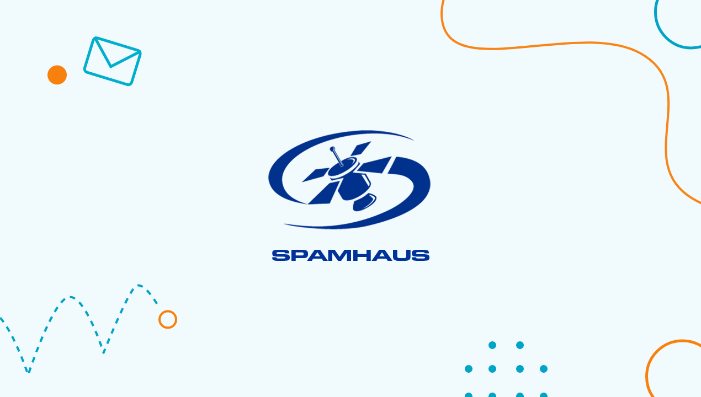
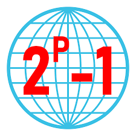
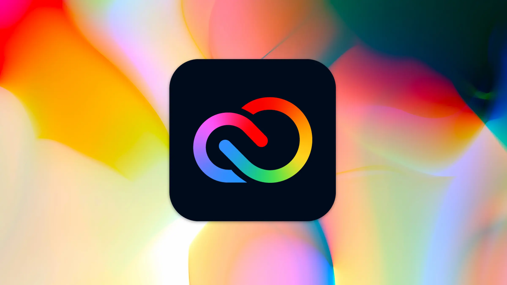
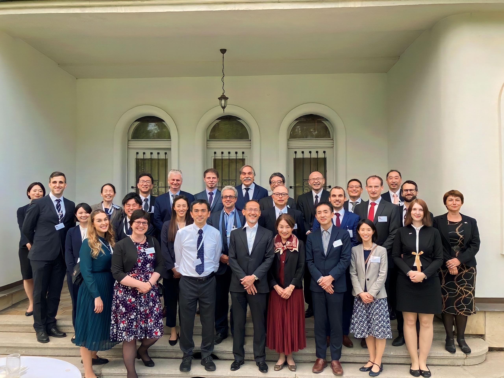
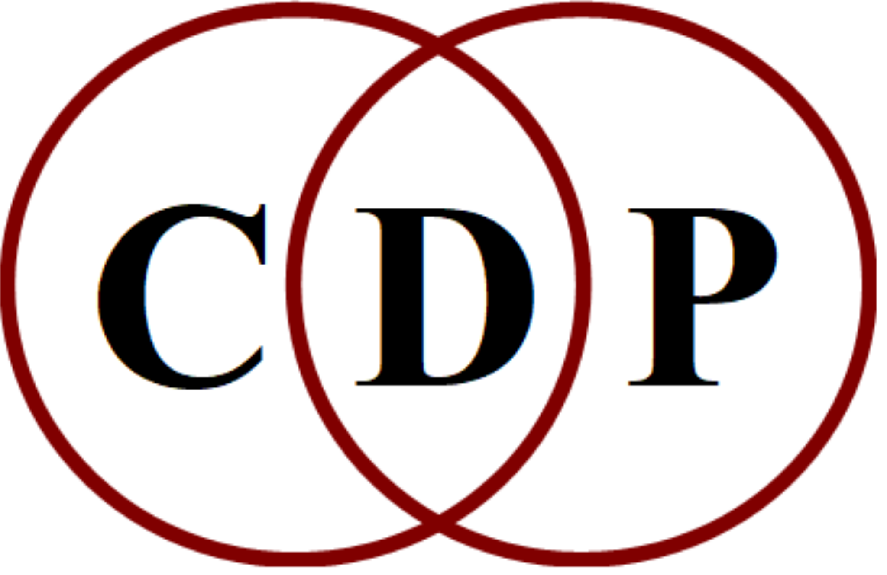
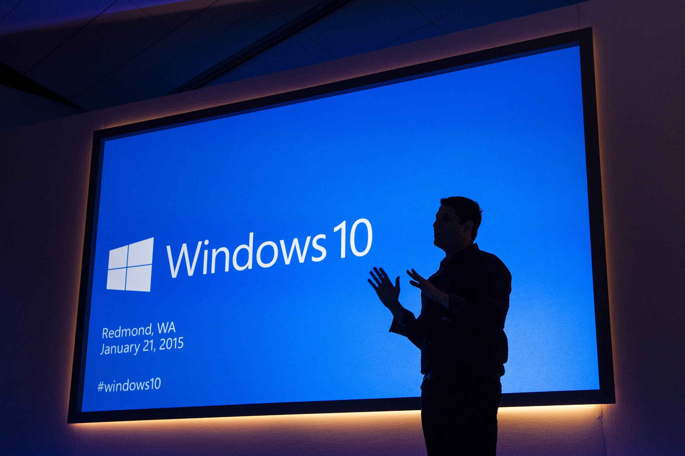
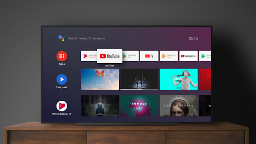
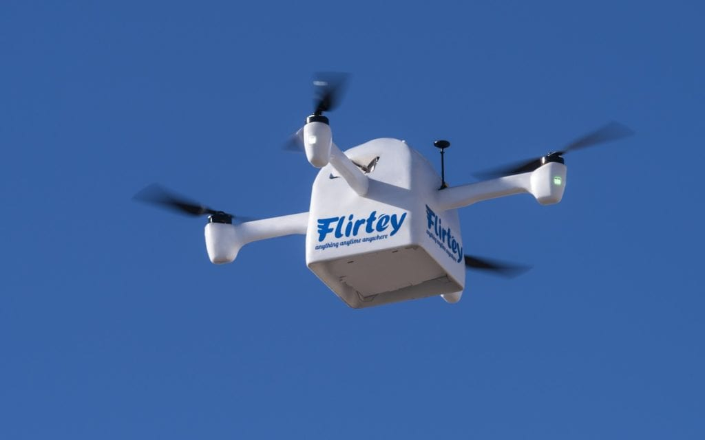
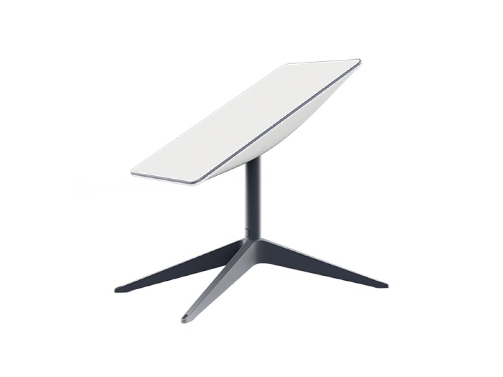

/ The Spamhaus Project /
In March 2013, CyberBunker, an internet provider named after its former headquarters in a surplus NATO bunker in the Netherlands that "offers anonymous hosting of anything except child porn and anything related to terrorism" was added to the Spamhaus blacklist used by email providers to weed out spam. Shortly afterwards, beginning on March 18, Spamhaus was the target of a distributed denial of service (DDoS) attack exploiting a long-known vulnerability in the Domain Name System (DNS) which permits origination of massive quantities of messages at devices owned by others using IP address spoofing. Devices exploited in the attack may be as simple as a cable converter box connected to the internet. The attack was of a previously unreported scale (peaking at 300 Gbit/s; an average large-scale attack might reach 50 Gbit/s, and the largest previous publicly reported attack was 100 Gbit/s) was launched against Spamhaus's DNS servers; as of 27 March 2013 the effects of the attack had lasted for over a week.
/ Leak of classified NSA information /
In June 2013, The Guardian reported the first leak based on top-secret documents that then 29-year-old Edward Snowden stole from the National Security Agency. At the time, Snowden worked as an intelligence contractor for Booz Allen Hamilton in Hawaii. That leak would certainly not be the last. In the years since, journalists have released more than 7,000 top-secret documents that Snowden entrusted them with, which some believe is less than 1% of the entire archive. Snowden downloaded up to 1.5 million files, according to national intelligence officials, before jetting from Hawaii to Hong Kong to meet with journalists Glenn Greenwald and Laura Poitras.
/ The largest known prime number /
At 23:30:26 UTC on January 25, 2013, the largest known prime number containing 17,425,170 digits was discovered by GIMPS (Great Internet Mersenne Prime Search). This is important especially for web security, as most informatics security works with prime numbers using them as keys between systems. The larger the number, the harder it is to hack it.
/ Popularity of drones /
It wasn’t until 2013, after Amazon announced it would use drones for delivery, that the general public really began to take notice. While the commercial drone space has struggled with regulations over the last ten years, the personal and recreational drone industries have grown under less scrutiny. The majority of hobby drones, those used by private citizens for non-commercial purposes, are quadcopters, or drones with four propellers. They are considerably cheaper than their commercial counterparts, typically under $2,000 and lacking the sophisticated software and sensors required of their commercial counterparts.
/ From Hotmail to Outlook /
Microsoft announced in February 2013 that it would be moving away from the Hotmail brand and began moving over 300 million users to the new Outlook.com e-mail service.
/ HEVC /
The Joint Collaborative Team on Video Coding formally introduced HEVC (high-efficiency video coding) on April 13, 2013. High Efficiency Video Coding (HEVC), also known as H.265 and MPEG-H Part 2, is a video compression standard designed as part of the MPEG-H project as a successor to the widely used Advanced Video Coding (AVC, H.264, or MPEG-4 Part 10). In comparison to AVC, HEVC offers from 25% to 50% better data compression at the same level of video quality, or substantially improved video quality at the same bit rate. It supports resolutions up to 8192×4320, including 8K UHD, and unlike the primarily 8-bit AVC, HEVC's higher fidelity Main 10 profile has been incorporated into nearly all supporting hardware.

/ From CreativeSuite to Creative Cloud /
Adobe announced it would no longer release new versions of its popular Creative Suite bundles on May 6, 2013. In the future, all Adobe software would only be accessible via a Creative Cloud subscription.
/ The Furusawa Group /
The Furusawa group at the University of Tokyo demonstrated complete quantum teleportation of photonic quantum bits on September 11, 2013. This achievement helped bring the quantum computer even closer to reality.
/ Composers Desktop Project /
The Composers Desktop Project (CDP) is an international cooperative network based in the United Kingdom that has been developing software for working with sound materials since 1986. Working on a cooperative basis and motivated by user-specific compositional needs, the project has focused on the development of precise, detailed and multifaceted DSP-based sound transformation tools. Currently, CDP provides sound transformation software (named after the project itself) for Windows and Mac OS X that has been evolving for over 20 years. In 2014 the main components of the CDP were released as an open-source package licensed under the LGPL. Makefiles are now available for Windows, OSX, and Linux.
/ Announcement of Windows 10 /
Microsoft announced on September 30, 2014, the next version of Windows, which would become Windows 10.
/ Android TV /
Android TV is a smart TV operating system based on Android and developed by Google for television sets, digital media players, set-top boxes, and soundbars. A successor to Google TV, it features a user interface designed around content discovery and voice search, content aggregation from various media apps and services, and integration with other recent Google technologies such as Assistant, Cast, and Knowledge Graph. The platform was first unveiled in June 2014, and was first made available on the Nexus Player that November. The platform has been adopted as smart TV middleware by companies such as Sony and Sharp, while Android TV products have also been adopted as set-top boxes by a number of IPTV television providers.
/ Flirtey /
A drone from Flirtey made a medical delivery on July 17, 2015, and became the first government-approved drone delivery.
/ Starlink /
Starlink is a satellite internet constellation operated by American aerospace company SpaceX, providing coverage to over 60 countries. It was publicly announced in January 2015 with the opening of the SpaceX satellite development facility in Redmond, Washington. During the opening, Musk stated there is still significant unmet demand worldwide for low-cost broadband capabilities and that Starlink would target bandwidth to carry up to 50% of all backhaul communications traffic, and up to 10% of local Internet traffic, in high-density cities.
/ Computer Hope and Hopebot /
In 2015 Computer Hope, website for computer help, information and support, has integrated helper bot Hopebot into the search engine to direct and answer several hundred thousand computer-related questions automatically.